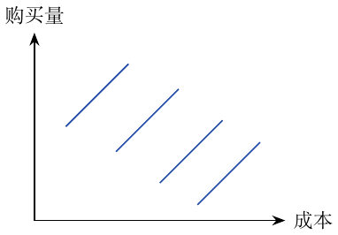

第14章：面板数据与固定效应
面板数据在多个时间反复观测同一单位。固定个体身份后，可用个体固定效应消除加性且不随时间变化的特征。
回顾 DID。对处理城市，干预后的未处理反事实可用“其干预前未处理结果 + 未处理城市随时间的变化”估计： \[E[Y_0(1)\mid D=1]=E[Y_0(0)\mid D=1]+E[Y_0(1)-Y_0(0)\mid D=0].\]
于是 \(\widehat{\mathrm{ATT}}=\widehat E[Y_1(1)\mid D=1]-\widehat E[Y_0(1)\mid D=1]\)：第一项已知，第二项估计。例子旁注提到在 DMA 投放广告的效果。
平行趋势约束的是前述未处理均值的变化，并非每个个体潜在结果的恒等式。面板模型为 \[y_{it}=\beta X_{it}+\gamma U_i+e_{it}.\] \(y_{it}\) 是单位 \(i\) 在时期 \(t\) 的结果，\(X_{it}\) 随时间变化，\(U_i\) 无法观测且不随时间变化。
面板数据的局限。
面板数据不能解决反向因果：原因和结果互相增强，固定效应无法控制这种关系。它也不能消除随时间变化的未观测混杂因素。
线性面板模型的残差化。
对于两组特征 \(X_1,X_2\)， \[\hat y=X_1\hat\beta_1+X_2\hat\beta_2.\] 特征矩阵以观测为行、特征为列。
将 \(y\) 对第二组特征回归：\(\hat y^*=P_{X_2}Y\)。
将 \(X_1\) 对 \(X_2\) 回归：\(\hat X_1=P_{X_2}X_1\)。
取残差 \(\widetilde X_1=X_1-\hat X_1\) 和 \(\widetilde y=y-\hat y^*\)。
将结果残差对特征残差回归，得到 \(X_1\) 的系数。
组内变换（within transformation）。
计算 \(\ddot Y_{it}=Y_{it}-\bar Y_i\) 和 \(\ddot X_{it}=X_{it}-\bar X_i\)，再将 \(\ddot Y_{it}\) 对 \(\ddot X_{it}\) 回归。因为 \(\bar U_i=U_i\)，固定效应消失： \[\begin{aligned} Y_{it}&=\beta X_{it}+\gamma U_i+e_{it},\\ \bar Y_i&=\beta\bar X_i+\gamma\bar U_i+\bar e_i,\\ Y_{it}-\bar Y_i&=\beta(X_{it}-\bar X_i)+\gamma(U_i-\bar U_i)+(e_{it}-\bar e_i),\\ \ddot Y_{it}&=\beta\ddot X_{it}+\ddot e_{it}. \end{aligned}\] 这样去掉了所有不随时间变化的未观测特征。 对通胀等时间效应，可为每个时期加入一个虚拟变量；随时间变化的因素也可能重要。个体内去均值后的变量总和为零；这一中心化恒等式对时变变量也成立。固定特征消失，是因为其每个去均值值都为零。因果解释仍需外生性，通常为 \(E[e_{it}\mid X_{i1},\ldots,X_{iT},U_i]=0\)。
图中画了多条平行的“购买量—成本”直线。固定效应模型给每个城市拟合一条线，并假定不同条件下的因果效应相同。

各城市内部平行的购买量—成本直线，保留蓝色。